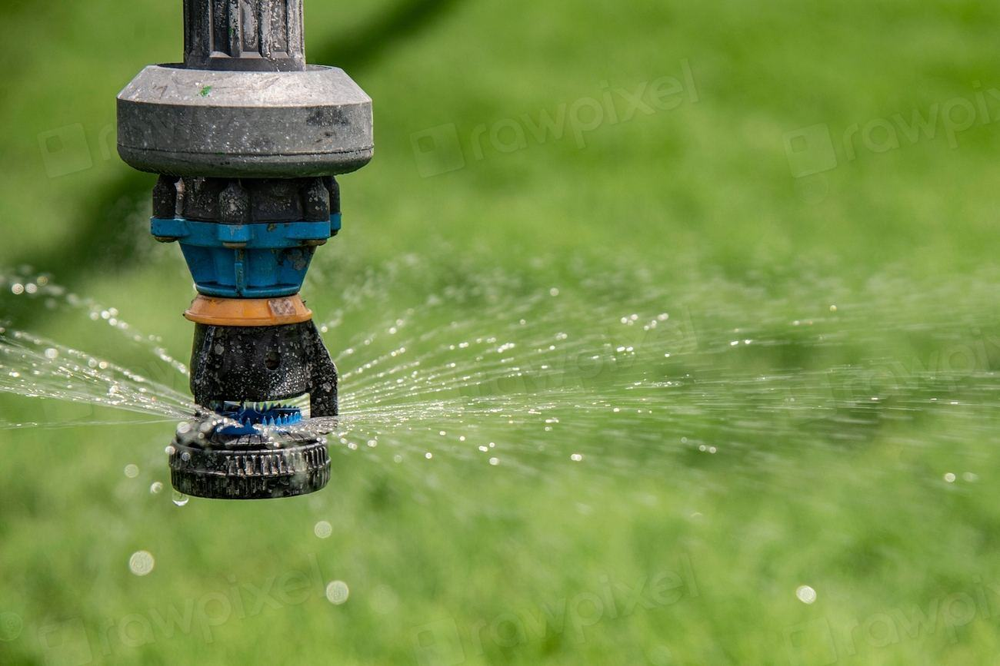

Referenser
Ett urval av uppdrag vi har utfört.
- 2026

Motorverkstaden Stallbacka
Nödbelysning i en verkstadshall på 18 000 kvadratmeter med två centralbatterier.
- 2025

Folkteatern vid Kanalen
Efterlysande markering i salong och foajé utan att störa ljussättningen.
- 2025

Torpaskolan
Talat larm och blixtljus i alla klassrum, med meddelanden anpassade för elever med hörselnedsättning.
- 2025

Handelsplats Torp
Byte av 640 armaturer och nya skyltar efter att butikerna byggts om.
- 2024

Åmåls Bryggeri
Utrymningsplaner på svenska och engelska för 28 platser i produktionen.
- 2024

Brf Slussgränd
Nödljus i sju trapphus och källargångar i ett hus från 1958.
Fastighetsägare och rektorer berättar
Roger E. · Trollhättan”Kvällsvandringen visade att halva lagret var mörkt vid strömavbrott. Nu har vi ett centralbatteri som testar sig självt varje vecka.”
Ingela F. · Trollhättan”De placerade ledstråken så att publiken ser dem men skådespelarna inte gör det. Vi trodde inte att det gick.”
Mohammed A. · Vänersborg”Våra elever med hörapparat ser nu larmet i varje klassrum. Hörselföreningen var med och testade.”